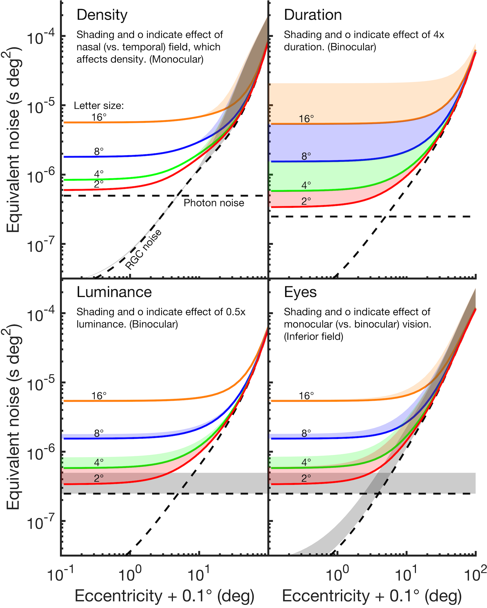
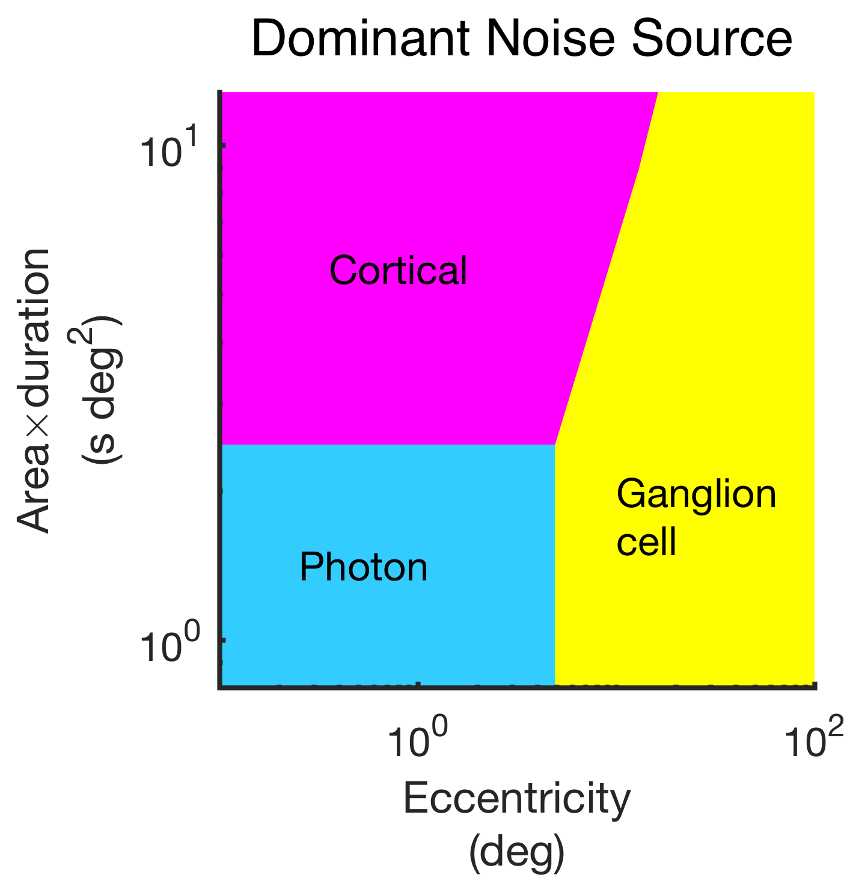
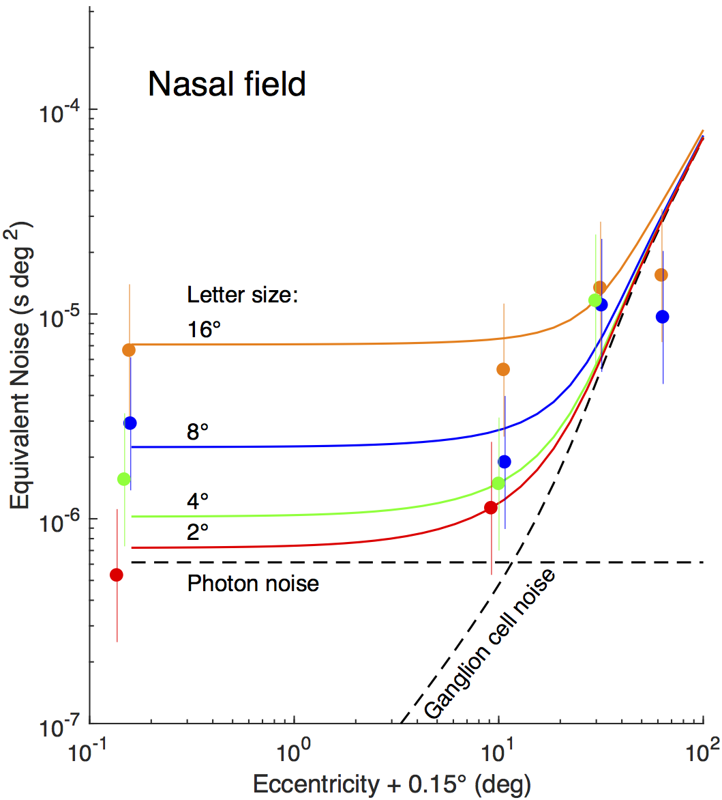
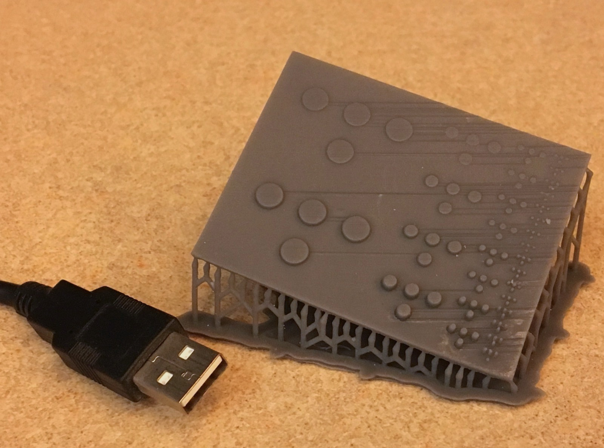
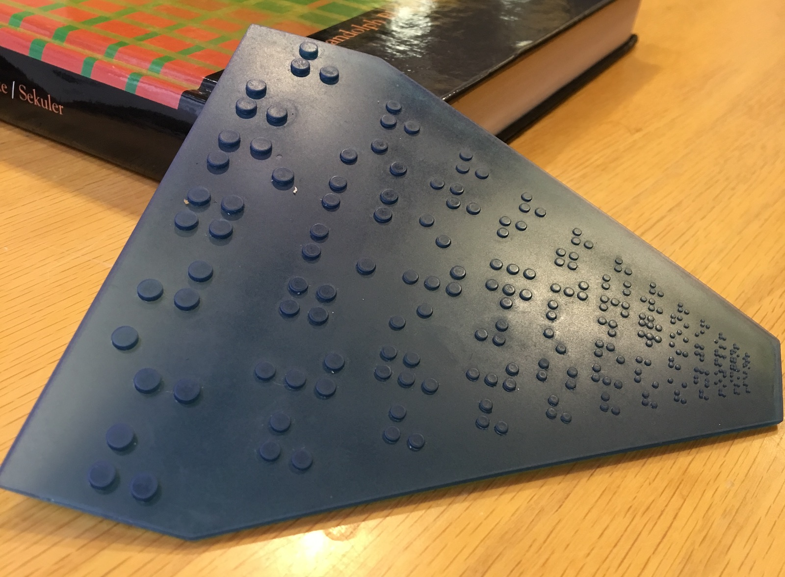

During the summer of 2017, I was a research assistant for Dr. Denis Pelli in the Department of Psychology at New York University. I worked on a number of projects investigating how the mind recognizes objects.
Dr. Pelli developed a model for visual equivalent noise. I worked with his model and experimental data to design visualizations in order to give viewers deep insight quickly.
In a vast oversimplification of decades of psychological research, equivalent noise is a measurement of how hard your brain and eyes make it for you to recognize an object. It's harder to recognize letters in dim lighting or when they're in the periphery of your vision, for example. In the Pelli model, equivalent noise is a function of many physical parameters, and so the graphs must strike a balance between showing as much of the relationship between the parameters as possible without overwhelming viewers. Since Dr. Pelli was largely interested in the phenomenon of crowding, we presented equivalent noise first and foremost as a function of eccentricity, using shading to demonstrate the effect of the other parameters.
Drawing inspiration from phase diagrams, I illustrated which source of equivalent noise dominates at a given eccentricity for letters of a given size. For small objects in the center of your vision—letters on a page, perhaps—the limiting factor is photon noise, which is inversely proportional to luminance.
For the poster, we settled on a much more minimalistic graph without shading in order to reduce visual clutter and show the relationship between observer data and the model.
The final poster can be found here.
Touch object recognition was another area of interest for Dr. Pelli. In order to investigate whether the phenomenon of crowding also occured with touch, Dr. Pelli requested braille charts, similar to an ophthamologist's eye chart. Previous attempts to CNC mill the chart out of aluminum or laser cut it out of wood or acrylic had failed because of the very small dot diameters and heights at the bottom of the chart. I developed prototypes using FreeCAD, the only CAD program that would run on my archaic laptop, and the Formlabs Form 2 3D printer that both included the smallest dots and also were smooth enough that the surface finish was not a source of noise. I choose an SLA printer specifically because of its ability to construct very small details. Regulation braille has dots 1.44 mm in diameter, and we wanted to go about half that size.
The first prototype demonstrated that the Form 2 could in fact resolve the smaller details that we desired, but printing on an angle resulted in nasty artifacts. For later versions, we printed along the axis of the dots, which resulted in a cleaner print and shorter print times.
There is a piece of software called ISET that was designed to make the development of new kinds of camera sensors easier. Some very smart vision scientists and programmers realized that our eyes are fancy camera sensors, and modified ISET to create ISETBIO, a MATLAB toolbox that allows for very detailed and accurate modeling of the human eye. It works in five steps.
I modified ISETBIO to allow for the addition of noise to images, which allowed us to estimate the contrast threshold of our robot observer and in turn make an estimate for it visual equivalent noise as a function of added noise. My simulations found a